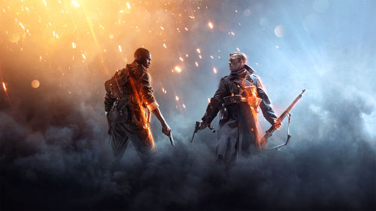
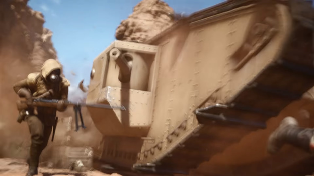
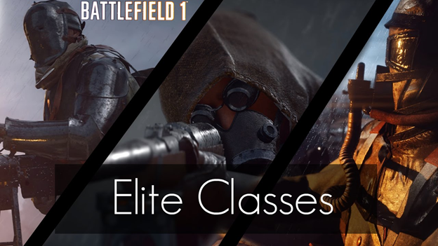
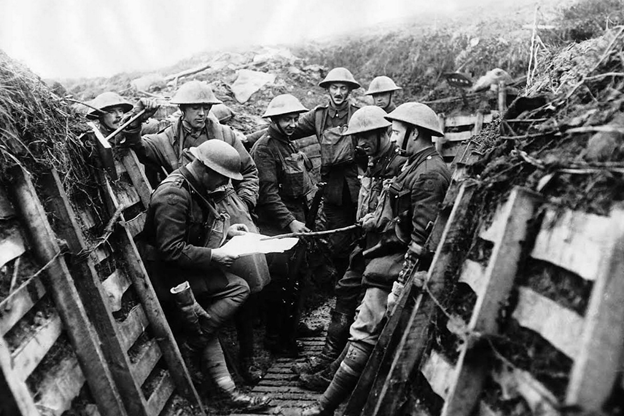
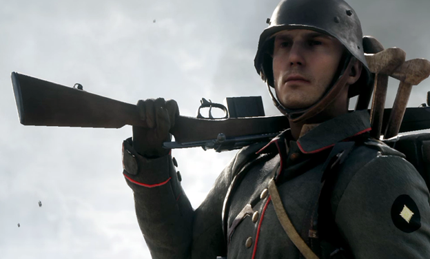
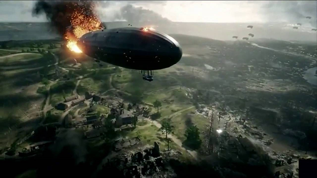

There’s a lot to learn in Battlefield 1, but if you’re just starting out, these nine tips can help you get up to fighting strength in a hurry, while you get used to some of the nuances of the classes, the weapons, and the vehicles.
Jumping right into a Battlefield 1 multiplayer battle, especially if you’re new to the series, throws you into the middle of battles with a bunch of unfamiliar weapons, and much more importantly, unfamiliar vehicles. Luckily, the single-player campaign for Battlefield 1 basically acts as a series of tutorials for different situations you’ll experience in multiplayer. Conquering the campaign will help you get acquainted with lots of the stuff you’ll find when you head into multiplayer, and let you cut your teeth on things you’ve never seen before.
Most first-person shooters send you out into the fray to blast enemies, die, respawn, and blast enemies again, with little regard to what’s going on in the big picture of a battle beyond rushing to the next control point or backing up your teammates. Battlefield 1, on the other hand, leans into its class system pretty hard by making a few elements essential to certain battles.
Character classes are nothing new to the Battlefield series, but the classes in Battlefield 1 have been tweaked to make them distinct from one another than in previous games. Each one has a pretty specific job, and particular circumstances in which they are most effective.
Vehicles are a game-changer in some Battlefield games. Used effectively, they can hassle the other team to the point of frustration. Similarly, they can seriously screw up your ability to defend territory and, if left unchecked, can ravage your team and cost you a match.
Through the course of multiplayer battles, you’ll often hear the announcer say something like “There’s a Sentinel kit near your position.” It’s easy to ignore that information, but you shouldn’t — it means there’s an elite class loadout near you, and you should grab it if you can.
More than most shooters, Battlefield 1 is not made for “lone wolf” players. Each multiplayer map starts with the ability to join a “squad” of other players, which allows you to spawn near specific teammates and marks them on your map. You get extra points for helping out your squad with heals and ammo as well. But the overall point of squads is to encourage you to avoid fighting alone, and with huge battles raging that have tons of players in them, you’re always going to be much, much more effective if you’ve got backup.
If you center your crosshairs on an enemy, there’s a button you can hit — RB on Xbox One, R1 on Playstation 4 and Q on PC — to “spot” the enemy. This is basically your character calling out the enemy to your teammates. Spotting an enemy marks them with an indicator that makes them easier to see, but more importantly, it grants that indicator to the rest of your teammates in the vicinity. Suddenly, everyone sees the guy you just watched climb up into a sniper position or who is sprinting across the battlefield to hit an unprotected control point.
This is another obvious one, but for players not used to class-based shooters, it’s easily overlooked. When you get dropped in the middle of a multiplayer match, you’ll have a few seconds to wait until you can respawn. During this time, you’re able to skip straight back to the map where you choose your next spawn point, but don’t do it — instead, check the indicators at the bottom of the screen that tell you if there is a Medic is nearby. If so, you’ll see a distance indicator that will tell you whether they’re approaching you or not. If they are, you want to be there, ready to go, when they arrive.
In some game types, giant death machines called “behemoths” can appear to wreak havoc on your team. These include a huge flying zeppelin, an armored train, and a dreadnought battleship. While these vehicles seem indestructible, they’re definitely not — provided you put enough effort into bringing them down.
